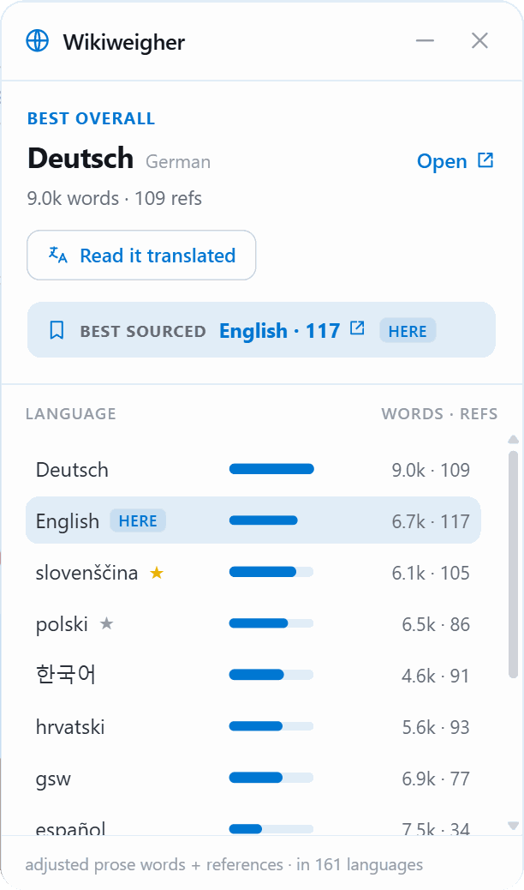
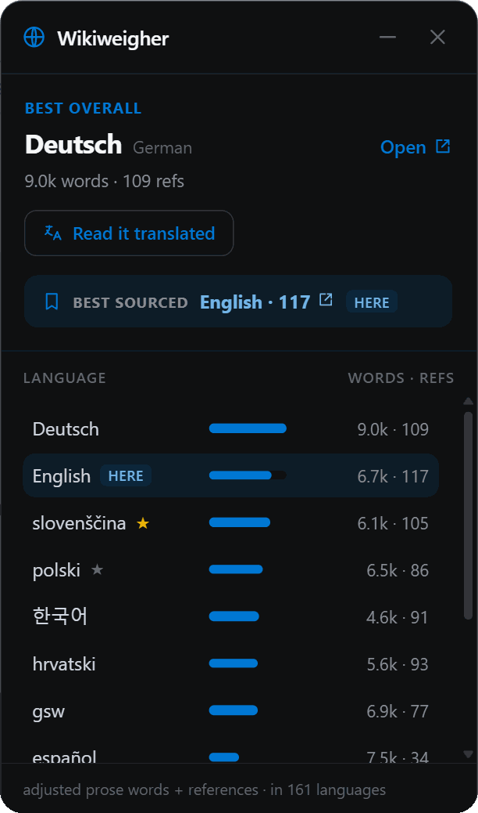
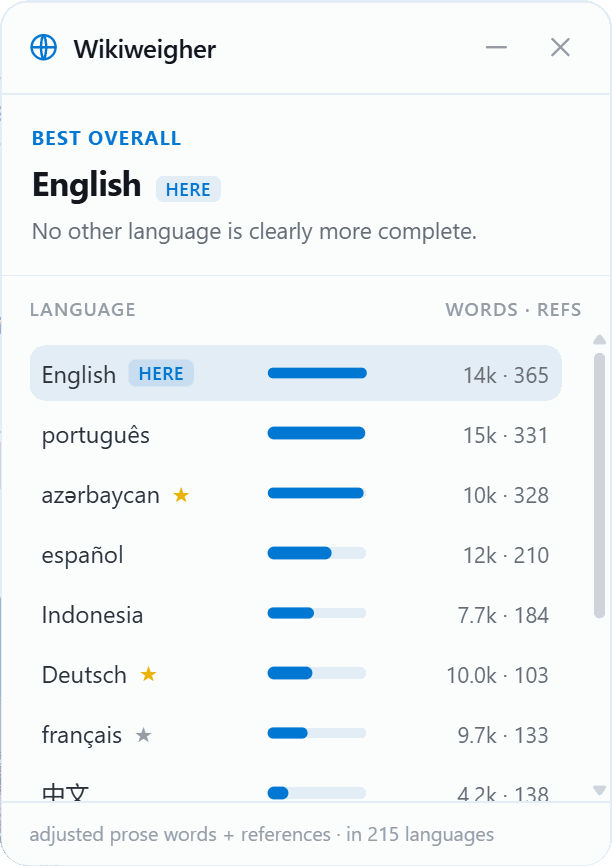
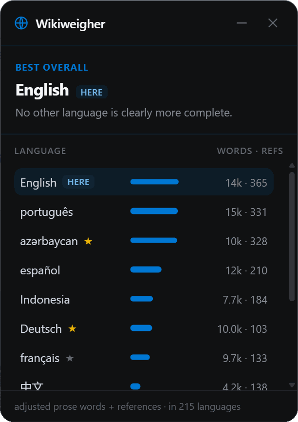
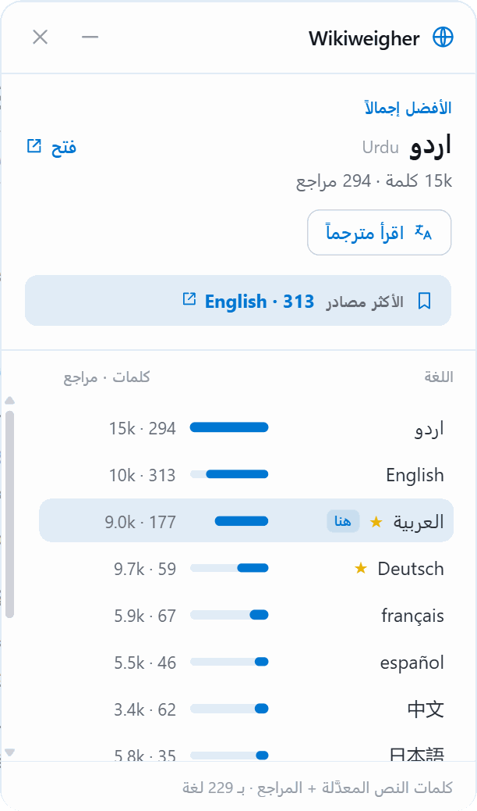
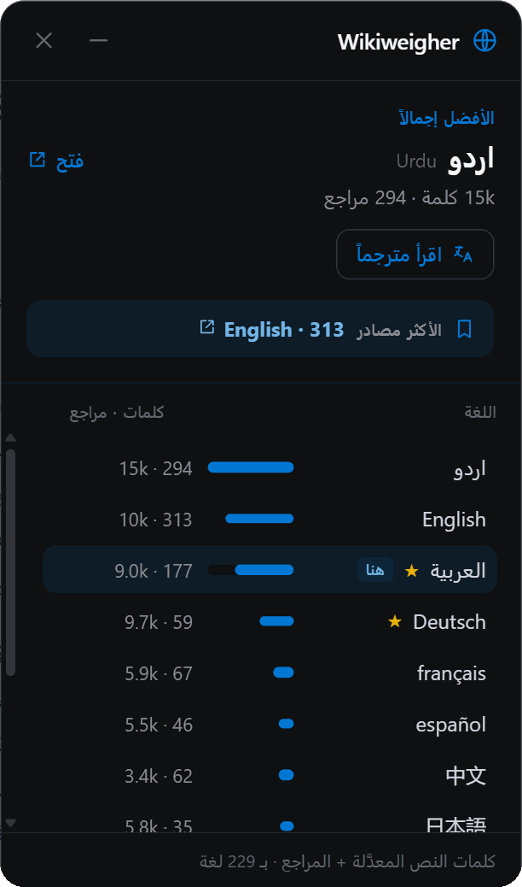
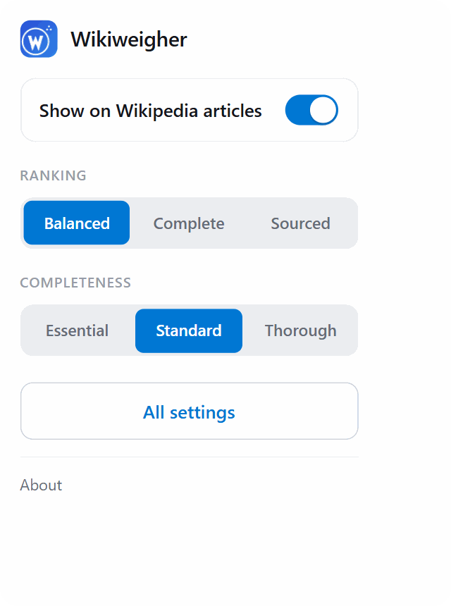
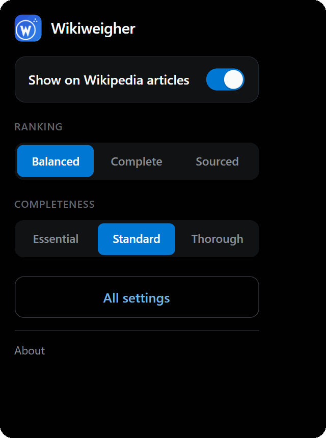
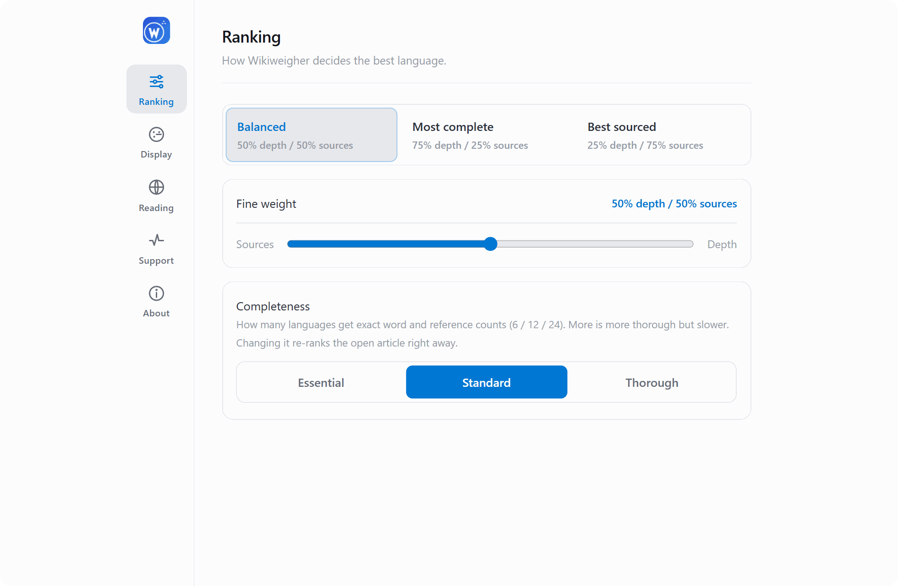
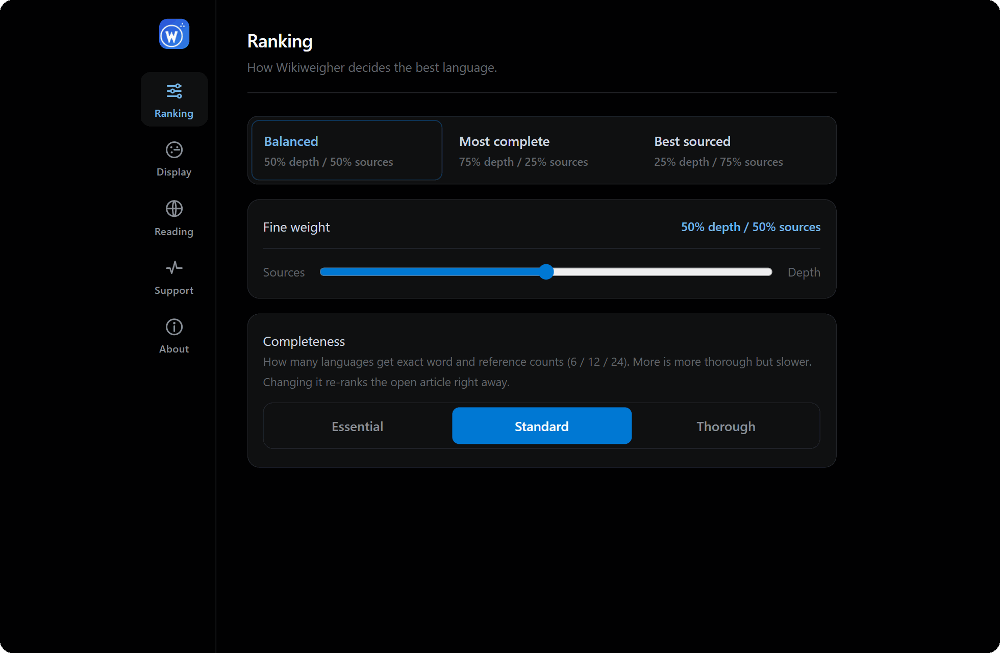

The same article, in the language that says the most.
This is Photosynthesis read in English. German carries 9,000 prose words to English's 6,700, so German wins and the card offers to open it, translated if you want.
Look at Spanish. It is the longer article at 7,500 words and still ranks below English, because it carries 34 references against English's 117, and sourcing is half the score.
Every picture in this tour is the real thing, not a mockup.


It tells you to stay.
Mount Everest in English, measured against every other language version. Nothing beats it, so nothing tries to move you.
A tool built to recommend will always find a reason to recommend. This one is allowed to say the honest thing, which is that you are already reading the best version and can close the card.
Drag the card anywhere and it stays put. Minimize it to a small pill and it stays minimized until you restore it.


It speaks the article's language.
Here it is on القاهرة on Arabic Wikipedia, laid out right to left. The card follows the language you are reading in, not the one your browser happens to be set to.
Twenty languages ship with it. Language names appear in their own script throughout.


Off means off.
Switch Wikiweigher off and no card appears and no requests are made, not a quieter card, nothing at all.
The same menu changes what “best” means. Weight the ranking toward depth or toward sourcing, and any open card re-sorts as you click, without reloading the page.
Everything else, in five panes.


RankingHow depth and references are weighed against each other, and how many languages get measured.
DisplayTheme, accent color, and the card's own language.
ReadingThe languages you read, which decides when the translate link appears.
SupportWhat the last run actually measured, and a button that writes a bug report for you.
AboutVersion, links, and what's new.
Nothing about you is collected.
Wikiweigher reads the article you are on and asks Wikipedia and Wikidata's public API about its other languages. No server, no account, no tracking. Your settings stay on this machine.
Open any Wikipedia article that exists in more than one language and the card appears on its own.
Something not working? Settings has a Support tab that writes a bug report for you.